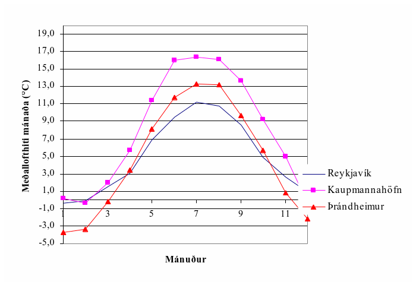
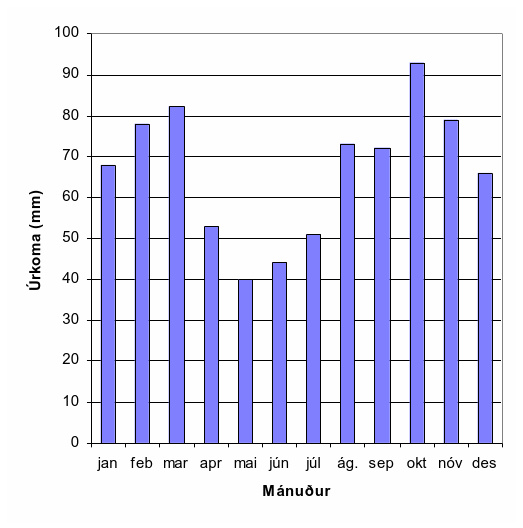
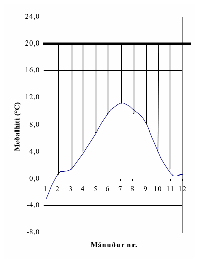
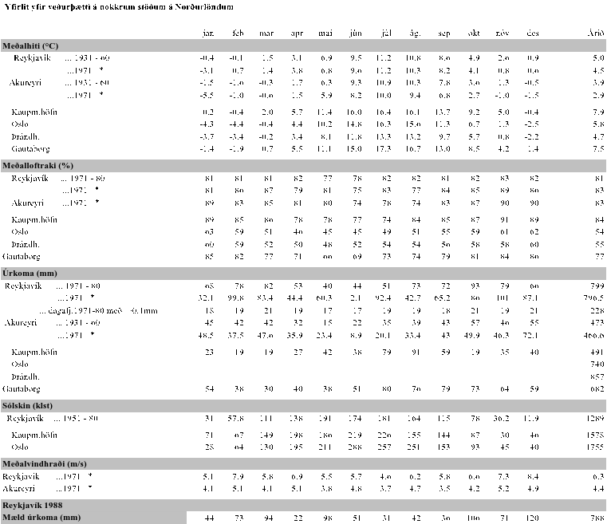

Háskóli Íslands – Umhverfis og byggingarverkfræðideild Húsagerð
Björn Marteinsson
5. 5 Veðurfar og inniaðstæður
5.1. 5.1 Almennt
Ísland liggur á tempraða beltinu, og hitabreytingar því takmarkaðar; hér er sjaldan verulega kalt eða heitt. Þar sem landið er hálent og liggur í braut lægða sem fara um Atlantshafið þá er vætusamt sunnanlands og vestan en mun þurrara norðanlands.
Í veðurfræðum eru notuð tvö hugtök sem ástæða er til að átta sig á;
Veðrátta (e: weather) lýsir ástandi á hverjum tíma
Veðurfar (e: climate) lýsir meðalástandi
5.2. 5.2 Veðurfar á Íslandi og samanburður við erlendar aðstæður
Upplýsingar sem eru birtar í línuritum og töflum, og varða Ísland, eru allar byggðar á mælingum Veðurstofu Íslands. Hluti mæligildanna er fenginn úr almennum mælingum Veðurstofunnar, en hluti byggir á mælingum sjálfvirkra mælistöðva sem mæla á 1-3 klst. fresti (línurit 5.2 – 5.5).
{kind=link}
Línurit 5.1 Meðalhitastig mánaða í Reykjavík, Kaupmannahöfn og Þrándheimi
Árshitastigssveifla er í Reykjavík umtalsvert minni heldur en gerist í grannríkjunum, jafnvel þegar bornir eru saman bæir á hliðstæðum breiddargráðum (Reykjavík og Þrándheimur).
{kind=link}
Línurit 5.2 Meðalúrkoma mánaða í Reykjavík (1971-1980)
Meðalársúrkoma í Reykjavík er um 800 mm, það rignir sjaldan mikið en rigningardagar eru þeim mun fleiri eða að meðaltali um 220 dagar á ári. Úrkoma kemur nokkuð jafnt alla mánuði ársins, línurit 5.2. Loftraki er ennfremur allhár árið um kring, línurit 5.3, og þetta, ásamt lágum sumarhita, getur orðið til þess að útþornun byggingarhluta gangi hægt.
{kind=link}
Línurit 5.3 Meðalloftraki í Reykjavík (viðmiðunarárið 1971)
{kind=link}
Línurit 5.4 Hitamunur inni og úti; Reykjavík (viðmiðunarárið 1971)
{kind=link}
Línurit 5.5 Tíðni vindátta í Reykjavík- vindrós fyrir tímabilið 1999-2000.
Tíðni mismunandi vindátta í Reykjavík (1999 – 2000) er sýnd á línuriti 5.5, og sést þar að austanáttir eru langalgengasta vindstefnan. Af línuritinu er að sjá eins og norðanátt komi aldrei á svæðinu, sem er alls ekki reyndin hinsvegar eru vindstefnumælar sjálfvirkra mælistöðva “blindir” á smá svæði, svæði sem iðulega er snúið í norður.
Útfrá upplýsingum um veðurfar eru iðulega skilgreindar nokkrar viðmiðunarstærðir;
Gráðutímar (gráðudagar)
Orkutap húsa er háð hitamun úti og inni, en einnig tímanum sem hitamunurinn ríkir, þetta samsvarar flatarmáli strikaða hlutans á línuriti 5.4. Summa margfeldis hitamunar og tíma er kölluð “gráðutímar” ef tímaeiningin er klukkustundir (og reiknað útfrá meðalhita klukkustunda) en “gráðudagar” ef tímaeiningin er dagar (og þá miðað við meðalhita daga).
Vætutími (e: time of wetness, TOW)
Það hefur verið sýnt fram á að tæring málma er beint háð tímalengd yfirborðsvætu á fleti; vætutíma. Í staðlinum ISO 9223:1992 er vætutími skilgreindur útfrá hitastigi og loftraka; TOW; tímalengd þegar >0 °C og 80 %HR
Frost-þýðu sveiflur
Fjöldi hitabreytinga úr hita í frost, þ.e. fjöldi sveiflna, talið á ársgrundvelli.
Frost í kjölfar úrkomu
Áhugavert er að skoða hversu oft frýs fljótlega eftir úrkomu (þegar gera má ráð fyrir að efnisraki sé ennþá hár).
Froststundir
Tímalengd frosts (<0 °C)
Tafla 5.1 Veðurfar á nokkrum stöðum á Íslandi og hinum Norðurlöndunum
{kind=link}
Veðrátta hér er í mörgu tilliti óvægnari fyrir byggingar heldur en gerist og gengur annarsstaðar; loftslag er rakt, úrkomur tíðar, slagregn algeng, hitaskipti milli frosts og þýðu algeng.
5.3. 5.3 Þægindakröfur og inniloft
Varmajafnvægi mannslíkamans
Líkamshitinn þarf að vera sem næst 37 °C og við bestu skilyrði er húðhitinn um 4 °C lægri heldur en innri hitinn, þ.e. um 33 °C. Til þess að halda líkamshita stöðugum þá bregst líkaminn við ytri aðstæðum með annaðhvort hita- eða kuldaviðbrögðum.
Líkaminn bregst við lækkandi hitastigi með því að draga svitaholurnar saman, öflug vöðvaviðbrögðin kringur holurnar geta birst sem gæsahúð. Blóðstreymi til húðar, sérstaklega á handleggjum og fótum, minnkar (æðar dragast saman) og hitastig húðarinnar getur fallið á kroppnum almennt niður í 30 °C og enn meira á útlimum. Blóðstreymi til slímhúða minnkar einnig. Næstu viðbrögð (húðhiti um 31 °C) eru ósjálfráður skjálfti sem getur aukið varmagjöf líkamans fjór- til fimmfalt á við varmagjöf í hvíld. Einstaklingurinn reynir jafnframt að minnka varmatap um yfirborð með því að hnipra sig saman. Við frekari kælingu byrjar innri hiti líkamans að lækka, þegar hitinn fer niður í 33 °C þá hefur slíkt áhrif á heilastarfsemina, við 26-25 °C fylgir meðvitundarleysi.
Við aðstæður þegar húðhiti hækkar uppfyrir eðlilegan hita (33 °C) og hætta er á að innri hitinn hækki einnig, þá bregst líkaminn við með því að auka blóðstreymi til húðarinnar (æðar víkkaðar) og við erfið skilyrði getur húðhitinn hækkað upp í 36 °C og varmatap vegna leiðni og geislunar vex því mikið. Ef breyting á blóðstreymi dugir ekki til þá losar líkaminn sig við umframorku með útgufun (svita). Ef þessi viðbrögð duga ekki þá hækkar innri hitinn, andadráttur og púls verður hraðari, og svo hættir svitamyndunin. Þessu fylgir þreyta og angist og svo getur farið að hjartað gefi sig - hitaslag.
Orkubúskapur líkamans
Líkami fullorðinnar manneskja inniheldur um 2000 kcal og ef orkubreyting á ekki að verða til þess að innri hitinn breytist þá má orkutapið ekki verða meira en 3,5 % af orkuinnihaldi líkamans og orkubæting má mest verða 2,5 %.
Tafla 5.2 Varmagjöf líkamans háð starfsemi |
|
Starfsemi |
Varmagjöf (W) |
Sitjandi í hvíld |
110 |
Standandi |
125 |
Gangandi 3 km/klst. |
220 |
|
300 |
|
730 |
Iðnaðarmenn |
750 |
Hámarksáreynsla |
1000 - 1400 |
Uppgufun frá mannslíkamanum (við venjulegan innihita) er að öllu eðlilegu 50 - 70 g/klst., og með hverju grammi tapast orka sem nemur 0,7 Wh, sem þýðir að líkaminn gefur frá sér 35-40 W vegna uppgufunar.
Tafla 5.3 Varma- og v ökvagjöf líkamans frá sitjandi manni í léttri vinnu; loftraki 30 - 70 %HR |
|||||
Lofthiti (°C) |
V armagjöf (W) vegna |
Uppgufun ( g/klst.) |
|||
leiðni |
g eislunar |
up pgufunar |
alls |
||
10 |
64 |
72 |
21 |
157 |
31 |
15 |
52 |
58 |
21 |
131 |
31 |
20 |
44 |
48 |
27 |
119 |
40 |
25 |
35 |
38 |
44 |
117 |
66 |
30 |
22 |
24 |
69 |
115 |
102 |
Til þess að lofthreyfing innandyra valdi ekki óþægindum („trekkur“) þá ætti lofthraðinn ekki að fara yfir 0,15-0,20 m/s , ef hraðinn fer undir 0,05 m/s þá virkar loftið kæfandi.
Með vaxandi lofthraða þarf lofthitinn að hækka svo óbreytt vellíðan haldist, tafla 5.4.
Tafla 5.4 Nauðsynleg hækkun lofthita háð lofthraða |
|
Aukinn lofthraði (m/s).. |
|
0,2 |
1 |
0,5 |
3 |
1,0 |
4 |
Skynjunarhitastig, en ekki lofthitinn einn, stýrir þægindatilfinningu mannsins og er það háð mörgum þáttum;
einfalt módel
Tsk = (Tl + Ty)/2 (5.1)
ef loftraki og lofthiti er tekið með í reikninginn fæst
Tsk = 0,4 Tl + 0,5 Ty + 0,1 Tf - 3,2 (5.2)
í jöfnum 5.1 og 5.2 er hiti í Celsius eða Kelvin gráðum og
Tsk skynjunarhiti
Tl lofthiti
Ty veginn meðalhiti
mótgeislunarflata
Tf s.k. vott hitastig
lofthraðinn (m/s)
Varmatap líkamans
Föt eru einangrandi hjúpur fyrir líkamann, og útfrá æskilegum líkamshita (ca. 37 °C), lofthita, einangrunargildi fatanna og varmayfirgangsmótstöðum má á hefðbundinn hátt ákvarða varmagjöf líkamans, eða nauðsynlegt einangrunargildi fatnaðar útfrá gefnum umhverfishita (að teknu tilliti til lofthraða osfr., þ.e. nota má áður nefndan skynjunarhita sem jafngildishita, og komast þannig hjá því að reikna orkutap vegna geislunar, lofthreyfingar ofl. sérstaklega), jafna 5.3;
= A∙(Tk-Te)/(1/ki + mkl + 1/) (5.3)
þar sem varmagjöf líkamans, W
A húðflatarmál (um 2,0 m2 fyrir fullorðinn)
Tk innri hiti líkamans (37 °C)
Te jafngildishiti umhverfis (skynjunarhitastigið)
ki „innri“ varmaflutningstala, oft notað 14 W/(m2∙K)
mkl varmamótstaða klæða
varmayfirgangstala frá líkamanum til herbergislofts (húð eða föt), oft notað 7,5 W/(m2∙K)
Húðflatarmál mannslíkamans má nálga með jöfnu 5.4 (heimild: Enøk i bygninger ..);
A=0,2*m0,425*h0,725 (5.4)
þar sem A húðflatarmál, m2
m líkamsmassi, kg
h hæð, m
Varmayfirgangstala húðar (eða klæða) er háð lofthraða, við hæga lofthreyfingu (innanhúss) er oft miðað við;
h= 7,5 W/(m2∙K)
Innri varmaflutningstalan ki er iðulega sett sem 14 en er talin liggja á breiðu bili, 1 til 20, þessi mörk eru notuð til að reikna neðri og efri mörk orkutaps (sjá töflu síðar).
Tafla 5.5 Einangrunargildi fatnaðar (1clo = 0,155 m2∙K/W) |
|
Lýsing |
clo |
nakinn líkami |
0 |
leikfimiklæðnaður |
0,1 |
léttur göngufatnaður |
1 |
venjulegur vetrarfatnaður |
2 |
klæðnaður pólfara |
5 |
Tafla 5.6 Þæg indahitastig, háð klæðnaði og varmayfir gangsmótstöðu húðar til lofts. Líkaminn í hvíld eða léttri vinnu (brennsla 2100 Wh/dag) |
||||
Klæðnaður |
= 17,5 (samsv. =1 m/s) |
= 7,5 |
||
neðri mörk |
efri mörk |
neðri mörk |
efri mörk |
|
0 |
30,4 |
32,6 |
27,7 |
29,4 |
0,1 |
30,2 |
31,9 |
27,0 |
28,0 |
1 |
24,4 |
26,0 |
21,2 |
23,0 |
2 |
17,9 |
20,0 |
14,8 |
16,5 |
Það er nokkuð ljóst hver þægilegur innihiti telst vera, að teknu tilliti til klæðnaðar og lofthreyfingar. Hinsvegar er ekki jafn ljóst hver æskilegur loftraki er innanhúss;
manninum líður ágætlega við tiltölulega háan loftraka (loftraki úti er um og yfir 80 %), en við lágan loftraka þorna slímhúðir. Það er ekki ljóst hversu lágur loftraki má vera – iðulega er t.d. sagt að loftraki skuli vera yfir 30 %, án þess að slíkt sé rökstutt sérstaklega.
hár loftraki verður byggingum erfiður vegna hættu á rakaþéttingum, m.a. á gleri. Almennt þá geta vandræði hlotist af því ef loftraki, í venjulegri byggingu, fer yfir 40-45 %HR þegar kalt er úti.
yfir vetrartímann er æskilegt að loftraki fari undir 30 % einhvern tíma, stundum nefnt í 2-3 vikur, þar sem slíkt mun koma í veg fyrir að smáskordýr (rykmaurar) fjölgi sér innanhúss.
Við ákvörðun á hæfilegum lofthita innanhúss útfrá þægindakröfum þá er augljóst að taka verður tillit til skynjunarhita, en þar vegur meðalhiti yfirborða allt að helming.
Dæmi 5.1 Veggurinn í Öskju– Skynjunarhitastig
Mæling á yfirborðshitastigi, og útreikningur fyrir mismunandi nánd við kaldan flöt.
Mældur yfirborðshiti með IR-myndavél;
{kind=link}
Gæði innilofts
Gæði innilofts eru háð mörgum breytistærðum þar sem lofthiti, loftraki og lofthreyfing eru vissulega mikilvægar, en magn óheppilegra efna í andrúmslofti skipta einnig mjög miklu máli. Afköst loftskipta í vistarverum eru skilgreind í byggingarreglugerð, 10. Kafli. Sem dæmi má taka gr. 10.2.5 sem fjallar um kröfur til loftræsingar íbúðarrýma:
Meginreglur: Eftirfarandi meginreglur gilda um loftræsingu íbúða og tengdra rýma:
1. Öll rými íbúða og íbúðarhúsa skulu loftræst. Heimilt er að beita náttúrulegri loftræsingu, vélrænni loftræsingu eða blöndu af hvoru tveggja. Loftræsing skal henta viðkomandi rými þannig að magn fersklofts sé fullnægjandi til að komið sé í veg fyrir lyktarmengun og rakamettun innilofts. Útsog skal vera úr eldhúsi, baðherbergi íbúðar, minni snyrtingum, þvottaherbergjum, stökum geymslum og kjallaraherbergjum. Útsog frá eldhúsi, salernum og þvottahúsi má ekki draga gegnum önnur rými hússins.
2. Íverurými eru loftræst þannig að magn fersklofts sem berst til rýmis sé minnst 0,3 l/s á m² gólfflatar á meðan rýmið er í notkun og minnst 0,2 l/s á m² gólfflatar meðan rýmið er ekki í notkun. Miða skal við að íbúðir aldraðra og sérhæfðar íbúðir fatlaðra séu í notkun allan sólarhringinn.
3. Magn fersklofts sem berst til svefnherbergis skal aldrei vera minna en 7 l/s á hvern einstakling meðan herbergið er í notkun. Önnur rými þar sem ekki er gert ráð fyrir stöðugri viðveru er heimilt að loftræsa þannig að magn fersklofts sé minnst 0,2 l/s á m² gólfflatar. Meta skal þörf fyrir loftræsingu í öðrum rýmum, s.s. sameiginlegum göngum, gufuböðum o.þ.h.
Viðmiðunarreglur: Eftirfarandi viðmiðunarreglur gilda um ákvörðun loftmagns í íbúðum og tengdum rýmum:
1. Tryggja skal að eftirfarandi loftskipti í íbúðarhúsum séu möguleg að lágmarki, óháð gerð loftræsingar:
Útsog úr eldhúsi íbúðar: 30 l/s.
Útsog úr baðherbergi íbúðar: 15 l/s.
Útsog úr minni snyrtingum: 10 l/s.
d. Útsog úr stökum geymslu- eða kjallaraherbergjum þar sem ekki er stöðug viðvera: 0,2 l/s á m² gólfflatar. Þegar geymslurými er innan íbúðar er heimilt að rýmið sé loftræst á sama hátt og íverurými íbúðarinnar.
Útsog frá þvottaherbergi einnar íbúðar: 20 l/s.
f. Sameiginlegt þvottaherbergi með samnýttum þvottavélum fyrir 2 íbúðir eða fleiri: 30 l/s á hverja þvottavél.
Stigahús: 17 l/s.
Sorpgeymslur: 0,6 l/s á m², þó að lágmarki 20 l/s.
2. Aðstreymi lofts að eldhúsi, baðherbergi, salerni eða þvottahúsi má koma frá aðliggjandi rýmum með minna mengunar- eða rakaálagi.
Byggingarreglugerðin setur á einum stað fram ákveðna kröfur leyfilegt magn koltvísýrings í innilofti (mat á virkni útloftunar). Í grein 10.2.8 er áskilið hver skuli vera leyfilegur meðalstyrkur og mesti styrkur CO2 í innilofti1;
Mesta leyfilegt magn CO2 í innilofti.
Tryggt skal að CO2 magn í innilofti verði ekki meira að jafnaði en 0,08% CO2 (800 ppm) og fari ekki til skamms tíma yfir 0,1% CO2 (1.000 ppm).
Áhugavert er að skoða þessar kröfu í tengslum við hversu mikilla loftskipta er krafist erlendis. Loftskiptakrafa almennt reynist vera mjög háð því hvaða mengun er um að ræða, eða á hverju krafan byggist, sjá töflu 5.7.
Tafla 5.7 Nauðsynleg loftskipti (samantekt) * |
|
l/s, einstakling |
Ráðandi orsök |
0,3 < |
2 % CO2 (útöndun) |
0,5 < |
1 % CO2 (afköst) |
1,0 < |
0,5 % CO2(lágmarksgildi tengt vinnuhollustu) |
3,5 < |
0,15 % CO2(líkamslykt - viðmiðun Pettenkofers 1858) |
2,5 |
ASHRAE Standard 62 - 1981 (USA) |
3,5 |
Svensk byggnorm 1980 |
4 |
Nordisk kommité for Byggbestemmelser, NBK 40, 1981 |
5-7 |
Berglund et al (líkamslykt) |
8 |
Fanger et al (líkamslykt) |
7,5 |
ASHRAE Standard 62 - 1989 (USA) |
5-10 |
Svensk byggnorm 1988 |
7-20 |
Nordisk kommité for Byggbestemmelser, NBK 61, 1991 |
10-30 |
Allergiutredningen (ofnæmiskönnun), Svíþjóð 1989 |
16-20 |
Weber et al, Coin et al (óþægindi vegna tóbaksreyks) |
14-50 |
Fanger et al (heildar lyktarupplifun, olf-álag) |
* heimildin vísar til samantektar sem gerð er af T. Lindvall
Dæmi; 5.2 Loftun íbúðar
Íbúð sem er 120 m2, 295 m3, hýsir 3 manna fjölskyldu. Hvað þarf mörg loftskipti á klukkustund svo ýtrustu kröfum í töflu 5.7 sé fullnægt?
n= (50 l/s, einstakling)1/(1000 l/m3)∙60 s/mín∙60 mín/klst∙3 einstaklingar/295 m3
= 1,83 lofts/klst.
Til samanburðar má nefna að í uppkasti að sérákvæði við staðal “Hitun húsa” þá er lagt til að hámarksafl hitakerfis miðist við fjölda loftskipta n=0,8 loftsk./klst.
Heimildir og ítarefni
S. Holst ( útg. ár vantar) VVS-teknik, kompendium i värme-, ventilations- och sanitetsteknik, Del I, Lunds Tekniska Högskola, Lund
Husbygningsteknik…
ISO (1992) Corrosion of metals and alloys-Corrosivity of atmospheres-Classification ISO 9223:1992
Enøk i bygninger - effektiv energibruk
Trausti Jónsson (1986) Veðurfar á höfuðborgarsvæðinu, Skipulagsstofa höfuðborgarsvæðisins í samvinnu við Veðurfarsdeild Veðurstofu íslands, Reykjavík
1 Útiloft hérlendis inniheldur iðulega rúmlega 400 ppm af CO2
5.12